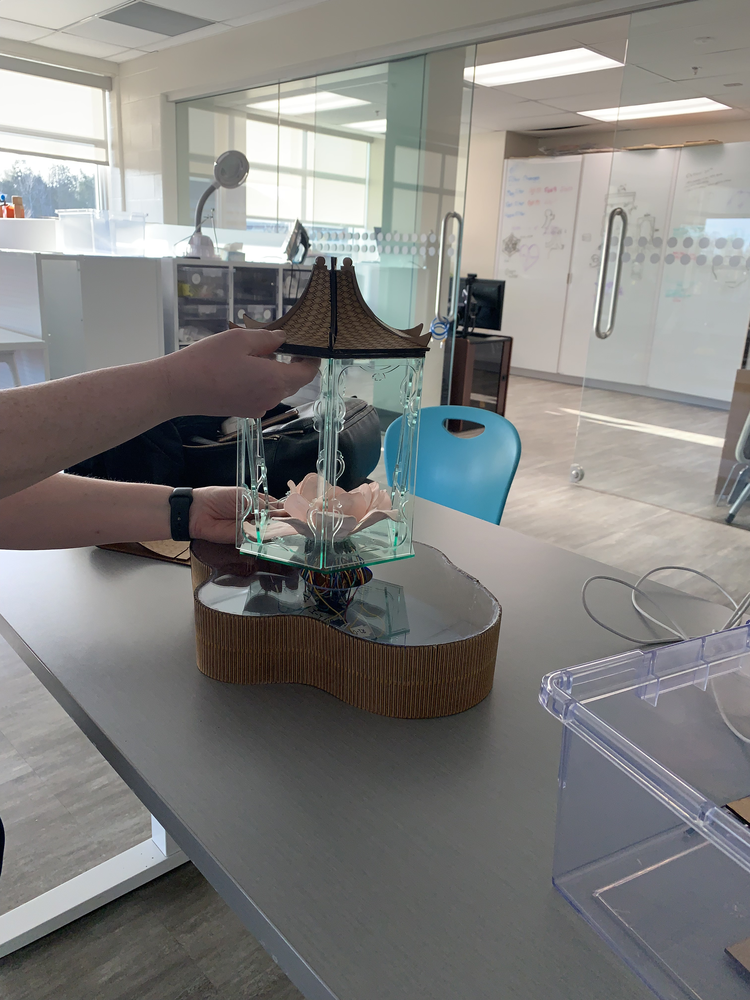
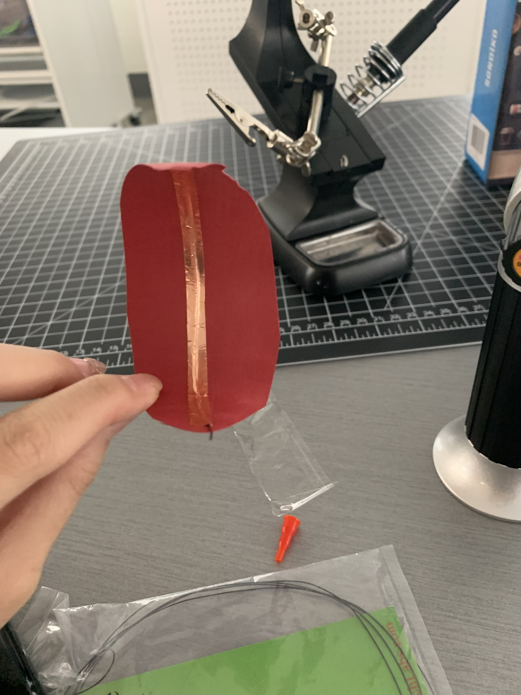

Locked Lotus combines a central hexagonal lantern with delicate glass panels and etched patterns, flanked by pink lotus flowers on a reflective, four-lobed base. The warm metal and soft botanical forms create a quiet, object-based narrative.





